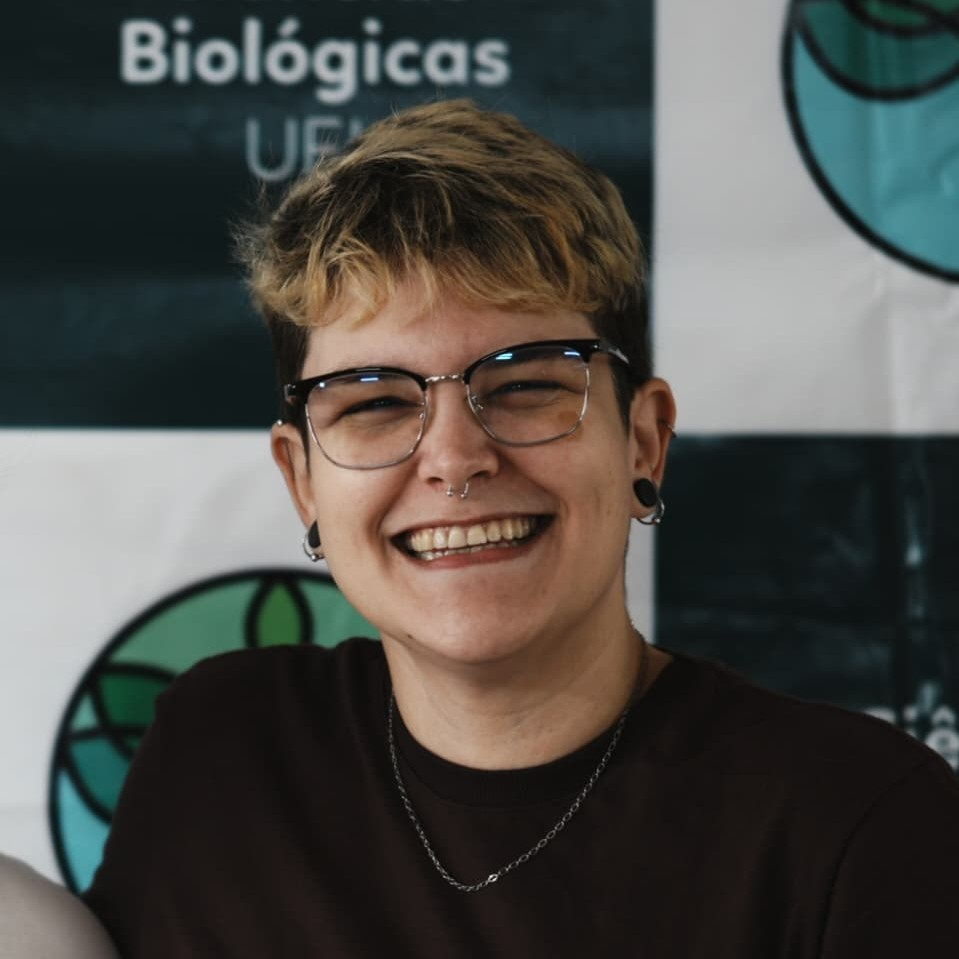
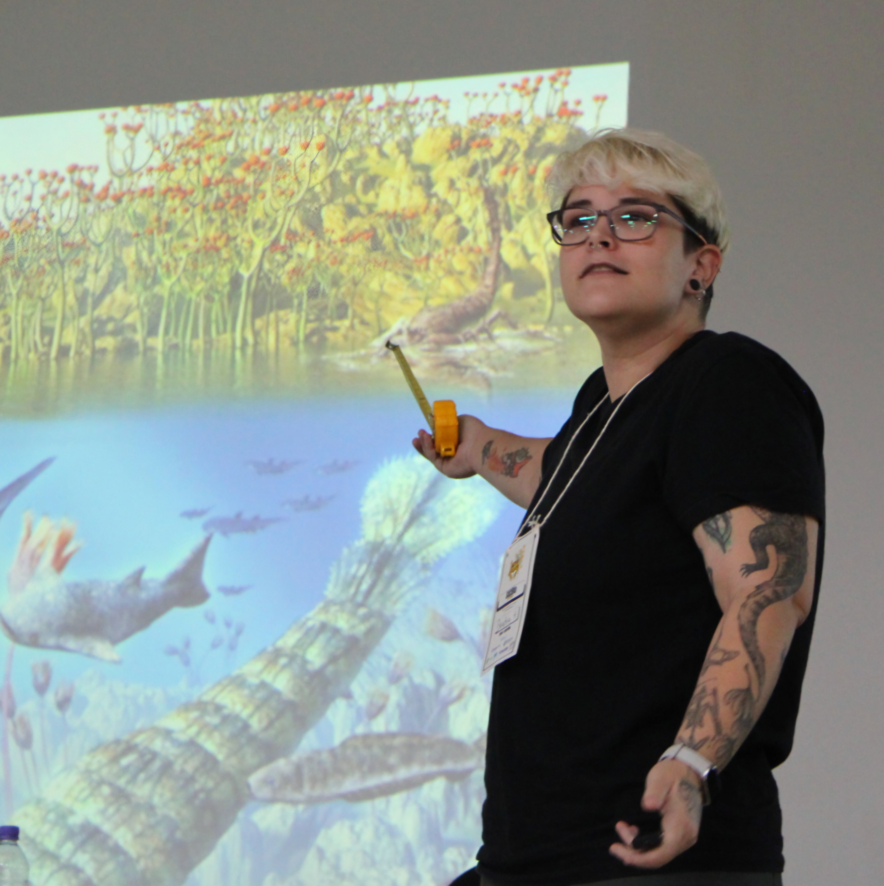
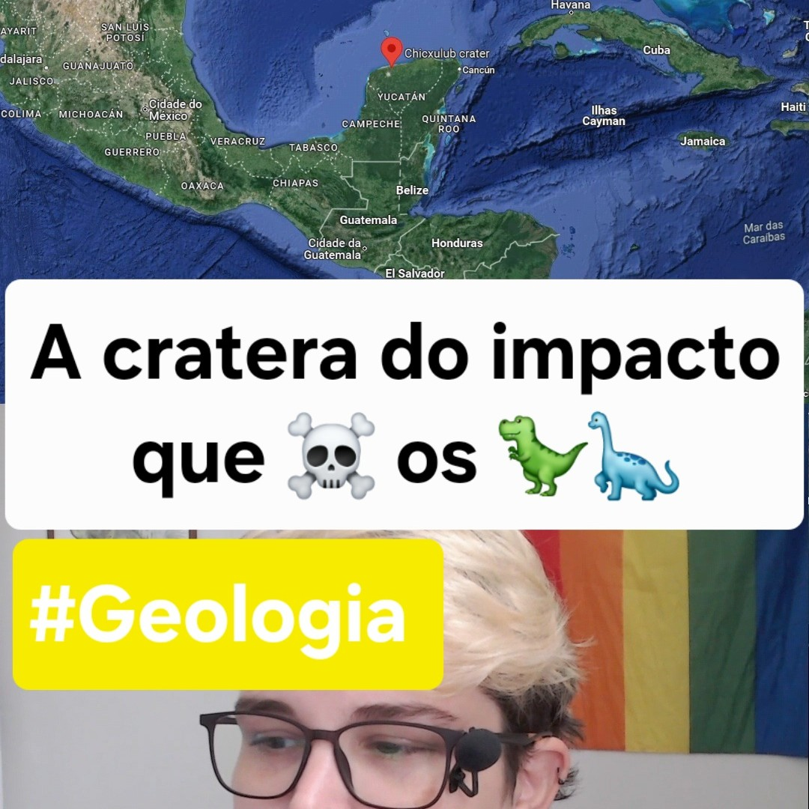
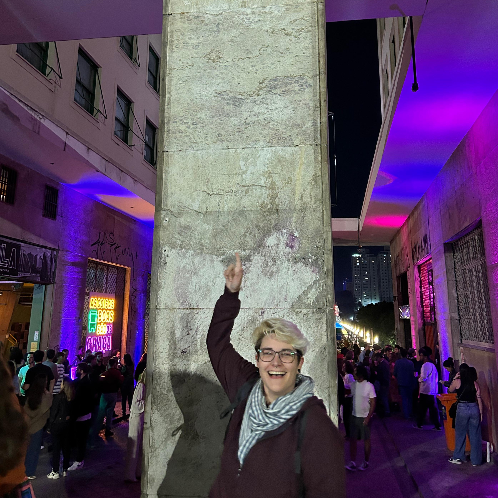
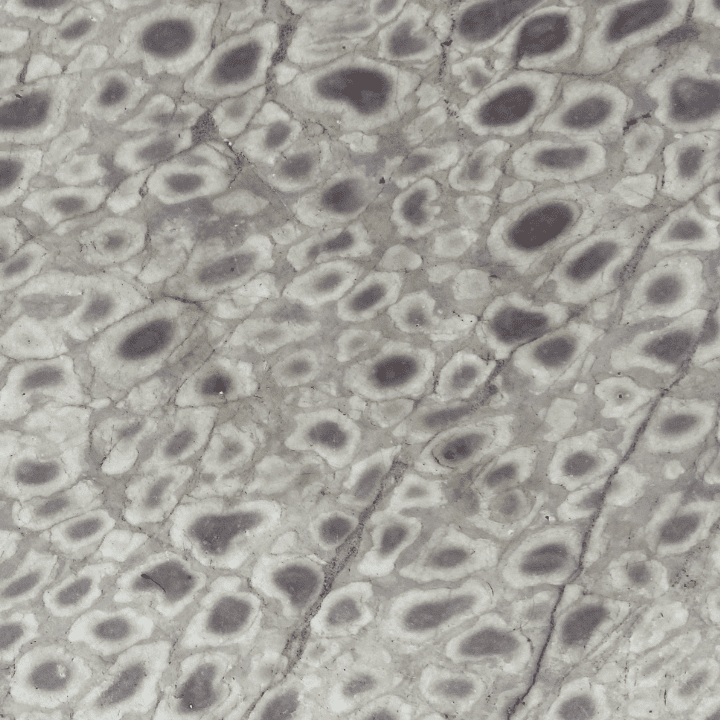
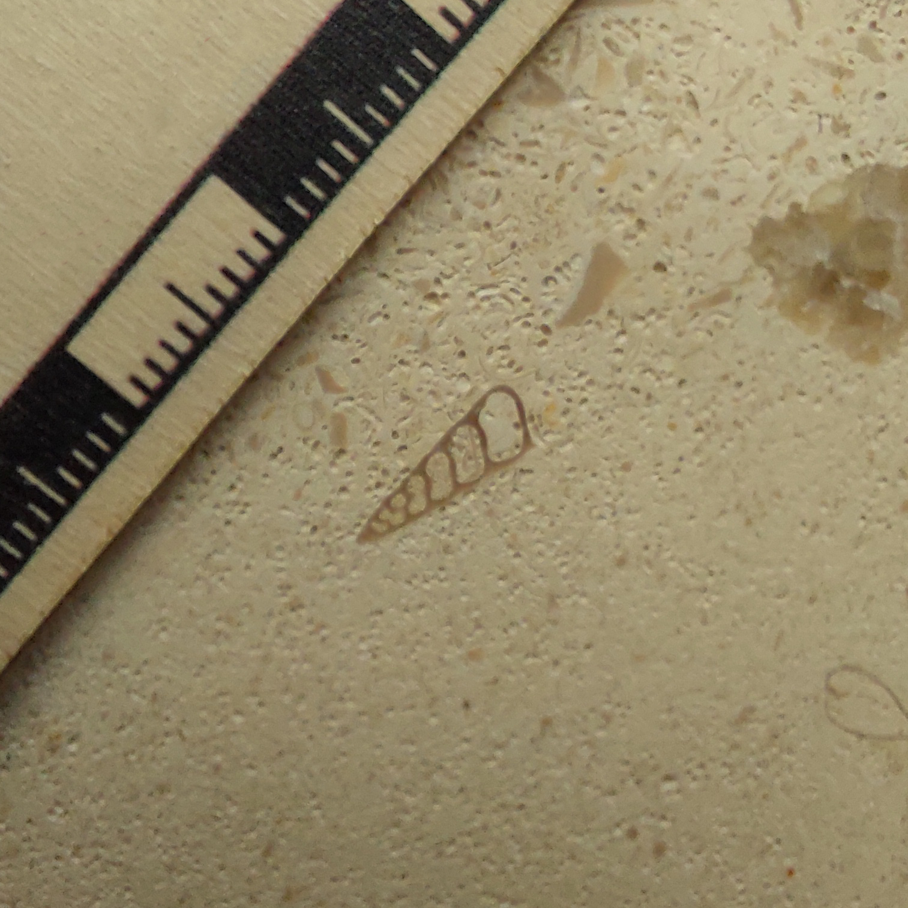

Beatriz Marinho Hörmanseder
Paleontóloga, divulgadora científica e artista 3D, identificando-se como pessoa Não-Binária (pronomes: ela/dela). Doutora em Biologia Animal, mestre em Patrimônio Geopaleontológico e bacharel em Ciências Biológicas. Atua na curadoria do acervo de Paleontologia do Museu de História Natural e Jardim Botânico e como professora voluntária de Paleontologia na UFMG. Desenvolve pesquisas e projetos voltados à preservação digital do patrimônio natural e produz conteúdo sobre Biologia e Geociências, aproximando a ciência do público.

Formação Acadêmica
- Doutora em Ciências Biológicas - Biologia Animal (UFES).
- Mestre em Geociências - Patrimônio Geopaleontológico (MN/UFRJ).
- Bacharel em Ciências Biológicas (UNIRIO).
Laboratórios colaboradores
Projetos atuais


Série dedicada a contar, de forma acessível, a história da vida na Terra. Da formação do planeta as condições que permitiram o surgimento dos primeiros organismos. Tanto presencial como palestra, como online disponível nas minhas redes dividida em episódios curtos.



Projeto dedicado a mapear e divulgar os fósseis encontrados em Belo Horizonte, revelando como elementos do passado geológico aparecem no cotidiano da cidade. Com o objetivo de explicar sua importância científica e aproximar a população das geociências.